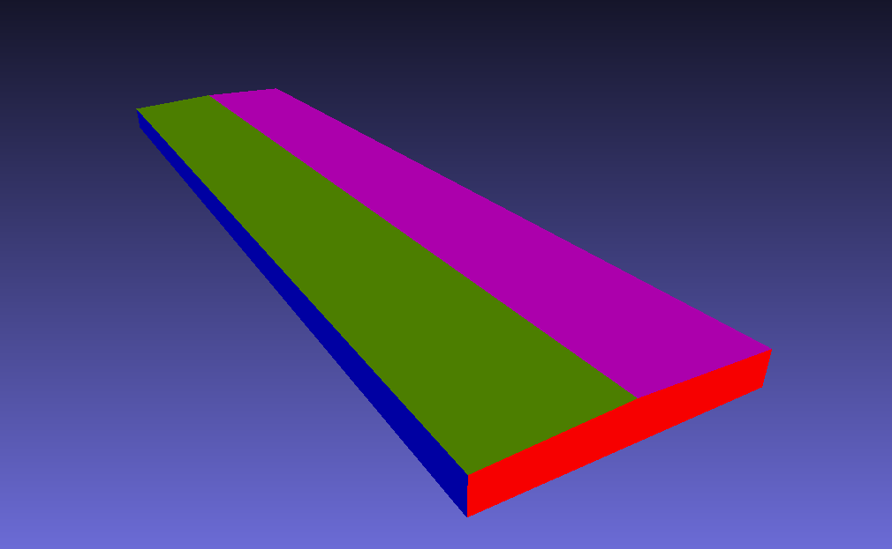
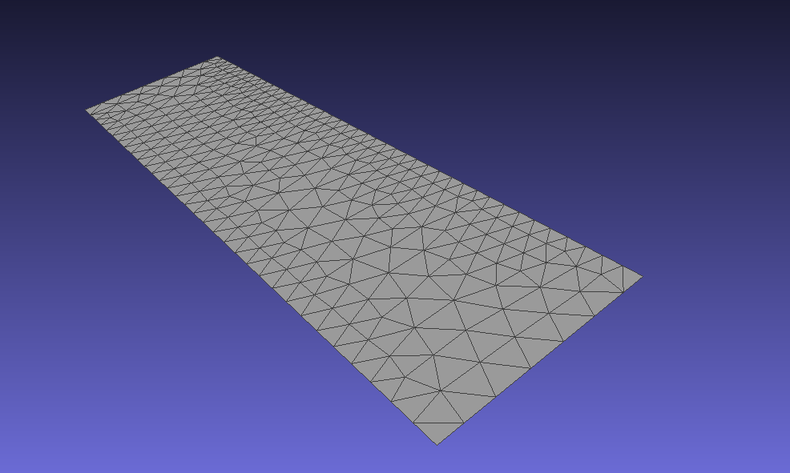
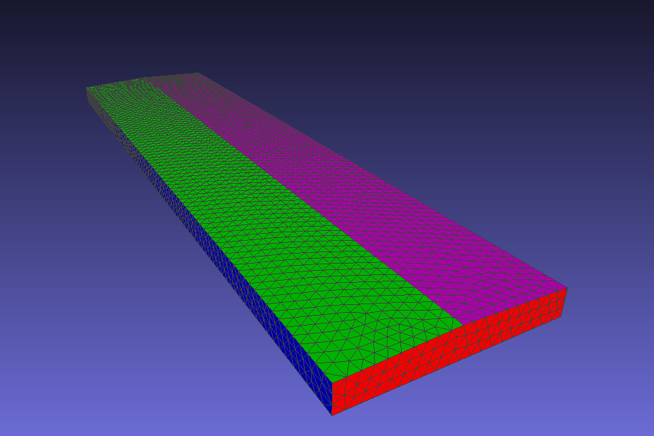
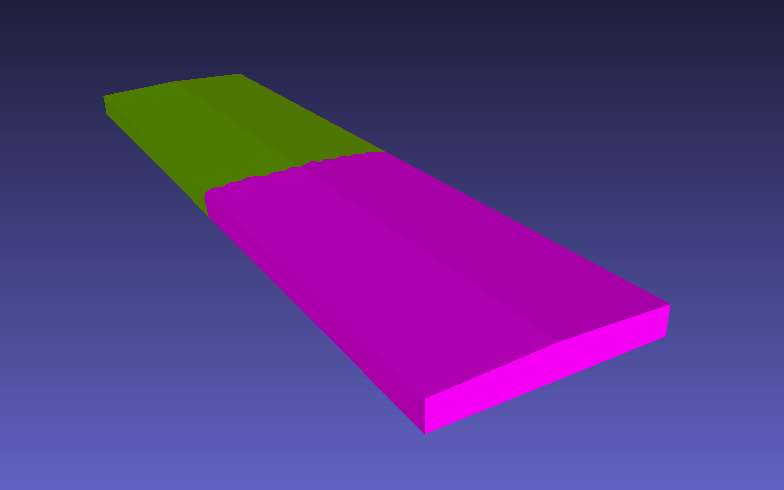

Concepts#
Some definitions are needed to abstract some use case rules.
Body#
A body is a logical geometry entity for the simulation. Its vertices and triangles define an unique logical entity.
Body is divided in surfaces that together define a volume.
For example, a generic building is composed by a left + right side roofs and walls, and a front + back side walls Each surface is colored with different colors in the image below:
{kind=link}
Surface#
Surface is a collection of geometry’s triangles. For example, consider the left side of a building’s roof. Its geometry is described as a STL file, which looks like this:
{kind=link}
Important
All surfaces of a structure must be defined in the pre-processing (before running the simulation).
Each surface of a body has its own triangles and its vertices. For the previous example, we can identify each surface of a generic building, and see its triangles:
{kind=link}
Regions#
Regions are defined by x, y and z intervals. Each combination of the three intervals result in different regions. For example, consider the following intervals definiton:
x_intervals = [0,100,200,300,400]
y_intervals = [0,50,100]
z_intervals = [0,15]
There will be 8 different regions as a result, (4 intervals in x * 2 intervals in y * 1 interval in z):
R1: 0 <= x < 100, 0 <= y < 50, 0 <= z <= 15
R2: 0 <= x < 100, 50 <= y <= 100, 0 <= z <= 15
R3: 100 <= x < 200, 0 <= y < 50, 0 <= z <= 15
R4: 100 <= x < 200, 50 <= y <= 100, 0 <= z <= 15
R5: 200 <= x < 300, 0 <= y < 50, 0 <= z <= 15
R6: 200 <= x < 300, 50 <= y <= 100, 0 <= z <= 15
R7: 300 <= x <= 400, 0 <= y < 50, 0 <= z <= 15
R8: 300 <= x <= 400, 50 <= y <= 100, 0 <= z <= 15
{kind=link}
The regions are used to filter triangles for a surface, or a collection of surfaces, grouping them together for processing. To define which region the triangle belongs, its center coordinate is used to evaluate in which intervals it lies. Then the triangle is indexed by the corresponding region.
Important
The rule to apply and guarantee that every triangle belongs to a region and one only, is to include the upper limit only if it is the last one. Otherwise, the upper limit is not included, only the lower limit is.
Sub-Body#
Sub-Body is a section of a body using defined intervals. If we section a generic building, using the following intervals:
x_intervals = [0,200,400]
We’ll get 2 different Sub-Bodies:
{kind=link}
Note
Sub-Body division does not require a prior separation before converting to LNAS.